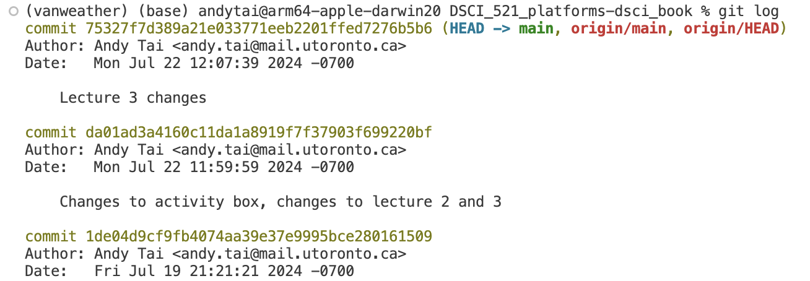
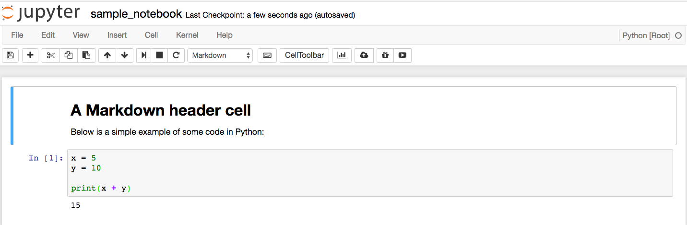

Getting groovy with Git and GitHub
Learning outcomes
- Explore the Git history via
git login the terminal and GitHub. - Compare commits using
git diffin the terminal and GitHub. - Solve merge conflicts at the command line and in VS Code.
- Save transitory changes with
git stash. - Manage to avoid pushing specific local files by including a
.gitignore. - Differenciate among different ways to restore your project history (
git reset --hard/--soft,git revert) when working on an older version of a project.
Introduction
In this lecture, we’ll explore how to view your Git history and restore older versions of files. Understanding your project’s history is crucial for tracking changes and fixing mistakes. Let’s dive into the different methods for accessing your commit history and how to revert to previous file versions when needed.
Viewing your Git history and restoring an older version of the file
Do you remember the commit messages that we used to write at the time of making a commit, for saving the state of a project? It is possible to have a look at the history of the full project with any of these 3 different methods
You can view the Git history of a project in two main ways.
On the remote, you can use GitHub through the repository’s code commit view.
On your computer, you can use Jupyter Lab through the repository’s code commit view or the terminal by using the git log command.
Notes: Now we have a project, but only 2 commits (the initial creation and adding us as the author). Let’s now add a couple more commits to generate a history that we can view and experiment with by editing our README.md.
Steps to follow:
Step 1: Use the pen tool to change the README header from the default (repo name) to a more proper English title for the project. Click on the big green button “Commit changes” to save your work.
Step 2: Use the pen tool to add today’s date as the project start date to the README. Click on the big green button “Commit changes” to save your work.
Step 3: Use the pen tool to add a fictional list of software dependencies for your project (e.g. R and Python) to the README. Click on the big green button “Commit changes” to save your work.
Step 4: “Accidentally” delete the list of dependencies you just created. Click on the big green button “Commit changes” to save your work.
Step 5: Bring all these changes down to your local computer by typing
git pullfrom inside the cloned repo on your laptop using Git Bash/terminal (hint - open the file locally to see that it looks as expected to ensure you did things correctly).
On GitHub, on the repo’s landing page click “N commits” link (where N is the number of commits made on the repo). Now we have a project, but only 3 commits. You can identify all parts of each commit, including the day it was made, author, hash. You can also go back to the repository at the moment of making this change by clicking the <> button.
If you want to access your project information using the terminal you can use the git log command. Pay attention that here you are looking at the long version of the hash and not the 7-character long version displayed by default in Jupyter Lab or GitHub. In both cases, you will be able to identify the commit using its hash.

Adding the flag --oneline to the command git log will provide you a different format for the output, in this case, you get a succint version of the information of each commit.
The terminal allows greater flexibility when it comes to obtaining information about your project. If you would like to know what other possibilities you have for using the git log command, you can access the help by typing the command git log --help.
We have covered three distinct methods for viewing your project’s history. Prior to starting the activities, give them a try yourself in an example Git repository!
What are the changes introduced between two commits? Whe have already learned three different ways to check your project history. Basically your project history is a temporary line with the changes (commits) made in your project along with its message and commit id or hash. We can have access to this information on GitHub, and locally using the terminal and Jupyter Lab.
But what if we want to go more into the detail and see exactly what have changed between two commits? What lines have been modified?
In the image you can see the comparison between two commits. In read is the old commit and in green is the most recent one. On the commit on the right has been introduced the phrase “I have changed! in line number 3 between the commits 35c218 and 89e195.
This is the way we compare commits, let’s see how we can access this view in the different platforms.
Viewing the history of a project
There are two ways to view the Git history of a project: you can either use the repository’s code commit view on GitHub, or you can use the git log command on your local machine.
Steps to follow:
- Step 1: On GitHub, on the repo’s landing page click “\(N\) commit” link (where \(N\) is the number of commits made on the repo, yours should be around 6).
- Step 2: On your laptop, from inside your Git repository type
git logat the command line. You can usegit log --onelinefor more succinct output or the alias shortcutglthat we created.- You can navigate this log by scrolling with the mouse, arrow keys, or by the same commands we used with
manin the first lectureq= quitb/space= up/down/+ search term + enter = search for a wordn/Ngot to next/previous match for the search term- You don’t need to memorize these commands, they’re here as a resource if you wish to use them instead of the mouse and arrow keys.
- You can navigate this log by scrolling with the mouse, arrow keys, or by the same commands we used with
Lecture 3 Activity 1
What are the main methods to view your Git history?
A. Using GitHub through the repository’s code commit view
B. Using Jupyter Lab through the repository’s code commit view
C. Using the terminal with the git log command
D. All of the above
Reflection point
How similar are the local and webpage log views?? Do you get the same information from both? Which seems easier to read/navigate?
Restoring an older version of a file
Oh no! We realize by viewing the history that we made a mistake! We didn’t mean to delete our list of dependencies. Worry not! We can now take advantage that we have been tracking this file under version control by using git restore to retrieve an older version of the file to replace the current version.
Let’s restore the version of the file BEFORE we deleted the software dependency list.
Steps to follow:
Step 1: Examine the log to identify the version of the file you want to revert to and note its short SHA-1 (the first few characters of the commit ID). You’ll need this to specify the exact point in time from which to retrieve the file.
Step 2: Next, use the
git restorecommand in the terminal to retrieve the file:git restore --source SHORT_SHA-1 FILENAME(you can also use-sas a shorthand for--source).Step 3: When restoring the file, it is added to the working area. To save the restored version of the file to the Git repository, you need to
addandcommitit, just like any other modification.Step 4: Don’t forget to run
git pushto back up the file on GitHub!
3. Deal with merge conflicts at the command line
When you run git pull git will do two things for you: it will fetch the content from the remote and then merge it into your repository. When you are working alone on a repository git will likely be able to do these two things automatically every time you pull, and you don’t need to intervene manually.
However, when working with collaborators there are usually changes made in more than one place (e.g., you made changes in the local repo on your laptop at the same time as your collaborator updated the remote repo on GitHub). Eventually, the same document will have been changed in different places and this can create issues for git regarding how to consolidate and merge these changes together. There are two distinct merge scenarios for when a document is changed in two places:
Place 1: Changes to a document where different lines are modified (Git can automatically merge these and will do so when you
pull).Place 2: Changes to a document where the same line(s) are modified (Git CANNOT automatically merge these and will complain that you have a “merge conflict” when you
pull).
In the second case, you have to help git by telling it which changes you want to keep. Git kindly points you to where the problem is in the output from git pull where it mentions which files have been modified from two source. You will need to edit this file to make it look how you want and then add it to the staging area and commit.

How do you know you have a merge conflict?
If you have committed some changes locally, you might see something like this when you try to push them:
To https://github.com/joelostblom/DSCI_521_lab1_jostblom
! [rejected] master -> master (non-fast-forward)
error: failed to push some refs to 'https://github.com/joelostblom/DSCI_521_lab1_jostblom'
hint: Updates were rejected because the tip of your current branch is behind
hint: its remote counterpart. Merge the remote changes (e.g. 'git pull')
hint: before pushing again.
hint: See the 'Note about fast-forwards' in 'git push --help' for details.As the message tells you, there are new changes to the remote repo that you need to pull down from GitHub before you are allowed to push up your changes. If there are no conflicts when you pull, Git will say that everything went OK and you can push up your new changes. If there are conflicts, you will see something like this:
remote: Counting objects: 5, done.
remote: Compressing objects: 100% (2/2), done.
remote: Total 3 (delta 1), reused 3 (delta 1)
Unpacking objects: 100% (3/3), done.
From https://github.com/joelostblom/DSCI_521_lab1_jostblom
* branch master -> FETCH_HEAD
Auto-merging README.md
CONFLICT (content): Merge conflict in README.md
Automatic merge failed; fix conflicts and then commit the result.
You have a merge conflict. Merge conflicts are not bad, they happen to everyone and you will need to know how to instruct git what to do.
Lecture 3 Activity 2
What of the following practices do you think could be a good idea in order to avoid having merge conflicts?
A. Push changes to the remote repository daily before starting to work on your local changes.
B. Pull changes to the remote repository daily before starting to work on your local changes.
C. Stash changes using the terminal before pulling potentially new conflicting information from the remote repository.
D. Work only locally or only in the remote repository.
What do you do to fix a merge conflict?
Steps to follow:
Step 1: Open the file that has a conflict (the output of
git pullwill tell you which files) in a plain text editor (e.g., VS Code).Step 2: Look for the conflict (hint: search for
<<<<<<< HEAD).Step 3: Fix the conflict by deleting everything you don’t want to keep in the file, including the
<<<<<,=====, and>>>>>markers that Git added. Note: VS Code will help you with this by color highlighting the changes and providing buttons you can click to accept either the current or incoming change (or both). Using these buttons instead of modifying the file manually can save you from mistakes that can take a lot of time to troubleshoot and fix, so we highly recommend using this feature.Step 4: After the file looks as you want it,
addit andcommityour changes. Then you canpushthem up to GitHub.
Here’s an example of a text file with a conflict and how it can look after you have resolved it:
Some text up here
that is not part of the merge conflict,
but just included for context.
<<<<<<< HEAD
We added this line in our last commit
=======
This line was added somewhere else
>>>>>>> dabb4c8c450e8475aee9b14b4383acc99f42af1d<<<<<<< HEADprecedes the change you made (that you couldn’t push)=======is a separator between the conflicting changes>>>>>>> dabb4c8c450e8475aee9b14b4383acc99f42af1dflags the end of the conflicting change you pulled from GitHub
Lecture 3 Activity 3
True or False?
You can solve a merge conflict by not accepting either the current changes or the incoming changes.
What about merge conflicts of Jupyter notebooks?
First - a bit about what a Jupyter notebook is made up of
.ipynbfiles are “plain” text files, and we can view them in a plain text editor and make some sense of them- The contents of the notebook are encoded in JSON format, which means that there are many brackets in the file, which can make it hard to read for humans (but easy for machines).
For example, this notebook of 2 cells:

is encoded by the following JSON:
{
"cells": [
{
"cell_type": "markdown",
"metadata": {},
"source": [
"# A Markdown header cell\n",
"\n",
"Below is a simple example of some code in Python:"
]
},
{
"cell_type": "code",
"execution_count": 1,
"metadata": {
"collapsed": false
},
"outputs": [
{
"name": "stdout",
"output_type": "stream",
"text": [
"15\n"
]
}
],
"source": [
"x = 5\n",
"y = 10\n",
"\n",
"print(x + y)"
]
}
],
"metadata": {
"anaconda-cloud": {},
"kernelspec": {
"display_name": "Python [Root]",
"language": "python",
"name": "Python [Root]"
},
"language_info": {
"codemirror_mode": {
"name": "ipython",
"version": 3
},
"file_extension": ".py",
"mimetype": "text/x-python",
"name": "python",
"nbconvert_exporter": "python",
"pygments_lexer": "ipython3",
"version": "3.5.1"
}
},
"nbformat": 4,
"nbformat_minor": 0
}Version control and Jupyter notebook
Because the notebooks are stored as plain text, we can use them for version control, but this is not without issues, since the JSON format can make it difficult to interpret difference between files and to manually fix conflicts.
JupyterLab IDE has made really easy now fix merge conflicts. …
Time travelling with git reset
If we chose to write something new to replace both commits, it could look like this:
Some text up here
that is not part of the merge conflict,
but just included for context.
We added this combined line after manually modification during the merge conflict.You then need to git add, git commit and git push the file to have these changes reflected on GitHub.
4. Stashing local non-committed changes before pulling
We have learned that if there are changes on your remote repo in GitHub and you already have local committed changes, you will need to pull before you can push. If the local and remote changes are in the same lines, you will have to resolve the resulting merge conflict, otherwise git will merge automatically. But what if you have just started to make changes to a file when you realize that you forgot to pull before you started to work? The first thing to do is to try to pull, if you’re lucky there are either no new changes or they are not in the same file you modified. If they are in the same file, you will get an error message like this:
error: Your local changes to the following files would be overwritten by merge:
README.md
Please commit your changes or stash them before you merge.
AbortingAs you can see, you could finish off your changes, add them, commit them, and then pull. This is possible if the changes you are about to make locally will not affect the files that have been updated remotely. However, if you’re about to change some of the files that have also been changed remotely it is better to run git stash, which removes your local changes from the working area and and saves them in another location (you can think of this as a secrete pocket which git does not care about when pulling from the remote repo, and from which you can take out the changes again when you need them). You can then do git pull, and follow up with a git stash pop to put your changes back from the stash to the working area, and then carry on working.
This workflow can save you from running into merge conflicts, as long as you have not already made modifications to the same lines as you are pulling down. If you have already modified the same file that was updated remotely, you will still run into a merge conflict when you do git stash pop. Stashing is also great when you are working on one feature but realize that you should actually work on another unrelated feature first, you can stash your existing work (instead of manually saving it elsewhere) and finish working on the most urgent feature first.
5. Tell Git to ignore irrelevant files using a .gitignore file
You may have encountered this before:
git statusOn branch timberst-master
Untracked files:
(use "git add <file>..." to include in what will be committed)
.ipynb_checkpoints/
.DS_Store
no changes added to commit (use "git add" and/or "git commit -a")Git is letting us know about untracked files (ones we have never committed before). We don’t care about these files. We’d prefer not to have them clutter our view (so we can pay attention to files we do want to track). What do we do?
5. Create a .gitignore file
Using the plain text editor of your choice (mine is VS Code) create a file called .gitignore inside your Git repo. To do this with VS Code, I would type:
code .gitignoreInside the text file, list the files and folders you would like to ignore, one per line. For example:
.ipynb_checkpoints/
.DS_StoreSave the file, and add and commit it with Git. Then try git status again. You should see:
On branch timberst-master
nothing to commit, working tree clean.gitignore tips and tricks
To have files or folders ignored in subdirectories within the repo, append **/ to the beginning of their names listed in the .gitignore file. Additionally, consider creating a global .gitignore file so that you do not have to create the same .gitignore for all your repositories.
Let’s create a gitignore file in our 521 lab 2 repo.
Steps to follow:
Sure, here it is in prose form:
Step 1: Use a text editor (e.g., VS Code, nano, Jupyter) to create a file called
.gitignorein your 521 lab 2 repo.Step 2: Add
**/.ipynb_checkpoints/to that file and save it.Step 3: Add and commit it with Git.
Step 4: Type
git statusand see if you no longer see.ipynb_checkpoints/as an untracked file.
In Git, we have the flexibility to handle changes in several ways. We can choose to keep the change made in the local repository, keep the change made in the remote repository, write something new to replace both, or get rid of the change entirely.
To move the branch we are currently on back to a previously created commit, we can use the git reset command. For example, let’s say we are on the master branch of a repository and the output of git log --oneline looks like this:
fb962e0 (HEAD -> master) Add md demo
bcb541e Make heading more precise
5c01f2f Initial commitTo reset the branch to the commit with the message “Make heading more precise,” we would use the command git reset bcb541e. This command repositions the branch to the specified commit, effectively discarding any changes made after that commit.
We can move the location of the master branch back in the commit history by typing git reset <sha>. So to move to the previous commit, we would type git reset bcb541e. Our git log would now show this:
bcb541e (HEAD -> master) Make heading more precise
5c01f2f Initial commitWhat happened to the changes that were made in commit fb962e0? The default behavior is to move them back into the working area, which was indicated by this message that showed up after we did git reset bcb541e:
Unstaged changes after reset:
M README.mdThat means we could now make any modification we wish and then commit again with a new commit message. If we want to discard the changes instead of moving them to the working area, we can add the --hard flag. Typing git reset --hard 5c01f2f will not show us any message, since the changes are not unstaged, they are discarded. Our log now looks like this
5c01f2f (HEAD -> master) Initial commitAre the previous changes lost forever? Not yet, git keeps a backup of everything that happens in the repo in its “reflog”. Commits that are not part of any branch are referred to as being “dangling”, and are cleared out at regular intervals, rather than immediately. So if we realize that we made a mistake right away, we could get our changes back by doing git reset bcb541e, which would move us forward to the commit we just “deleted”. This behavior should not be relied upon because when the reflog is automatically cleared by git, your changes are gone forever.
Lecture 3 Activity 4
True or false?
The .gitignore file itself can be committed and pushed to a remote repository.
Syncing with a remote after resetting
This is a dangerous operation that can delete all your work. If we want to get rid of a commit on a remote, we will need to push our changes. But as we have seen before, git will refuse to push changes when the remote is ahead of the local branch. To override this warning and force git to push to the remote we can use the -f/--force flag.
Force pushing is dangerous, and you should never do this on the master branch of a repository that you share with collaborators unless you have all discussed this and they are aware of what you are doing. The reason is that by force pushing, you will make it so that everyone else who is using this repository are now out of sync with the master branch, since you have reset master to a previous state. Be careful, better safe than sorry
Times when a force push is legitimate includes when you have have rebased a feature branch to syn it with master or if you are working alone and you are 100% sure that you want to remove a commit from GitHub. A safer way to undo a change in a commit, is to make a new commit that removes the content of the old one. You can do this manually, or use git revert <sha> to automatically create a new commit that undoes an old one.
Exercise: Accessing and Working with GitHub
Lecture 3 Exercise 1
Accessing and Working with GitHub
Objective: By completing this exercise, students will gain hands-on experience in accessing their GitHub home for MDS, creating, cloning, modifying, and pushing changes to a GitHub repository.
Instructions:
Access Your GitHub Home for MDS:
- Open your web browser and navigate to:
https://github.ubc.ca/MDS-2021-22/yourCWL_home- Replace
yourCWLwith your actual CWL. - Here you will find links to all the courses’ repositories and labs’ repositories.
- Hint: Bookmark this page for easy access to all relevant courses’ repositories.
Create a New Repository on GitHub:
- Visit GitHub.com.
- Create a new repository and ensure you add a README file during the setup process.
Clone the Repository:
- Clone the newly created repository to your local machine.
- Note: If your GitHub username is different from the username on your computer, you will need to configure your Git settings accordingly.
git clone https://github.com/YOUR_GITHUB_USERNAME/YOUR_REPOSITORY_NAME.gitMake Changes to the README File:
- Open the README file in a text editor.
- Add some content or modify the existing content.
- Save your changes.
Add and Commit Your Changes:
- Stage the changes you made to the README file.
git add README.md- Commit the changes with a descriptive message.
git commit -m "Updated README with new content"Create a New File, Add, and Commit It:
- Create a new file in the repository (e.g.,
newfile.txt). - Add some content to the new file and save it.
- Stage the new file.
git add newfile.txt- Commit the new file with a descriptive message.
git commit -m "Added newfile.txt with initial content"- Create a new file in the repository (e.g.,
Push Your Changes to GitHub:
- Push the changes from your local repository to the remote repository on GitHub.
git push origin mainConfirm Your Changes on GitHub:
- Go to your GitHub repository page.
- Confirm that the changes to the README file and the new file (
newfile.txt) are reflected in the repository.
View Your Git History:
- On GitHub, click on the “Commits” link on the repository’s landing page.
- On your local machine, use the
git logcommand to view the commit history.
git log- Use the
git log --onelinecommand for a more concise view.
git log --onelineRestore an Older Version of a File:
- Identify the commit hash for the version you want to restore.
- Use the
git restorecommand to revert to that version.
git restore --source SHORT_SHA-1 FILENAME- Stage and commit the restored file.
git add FILENAME git commit -m "Restored FILENAME to previous version"- Push the changes to GitHub.
git push origin main
Questions:
- What are the steps to access your GitHub home for MDS?
- What are the steps to create a new repository on GitHub?
- What command do you use to clone a repository to your local computer?
- How do you add and commit changes to a file in a Git repository?
- What command do you use to push changes to GitHub?
- How do you view your Git history?
- How do you restore an older version of a file in a Git repository?